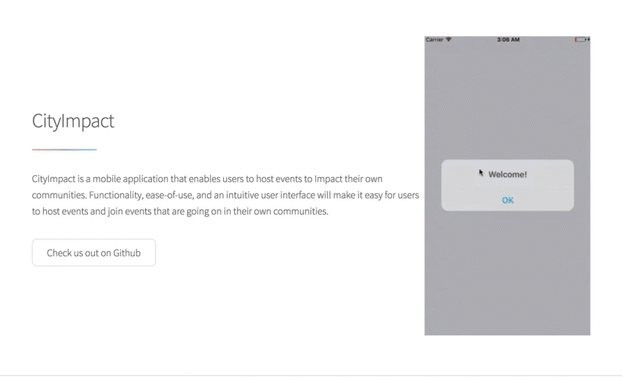

Sean O'Reilly
They Key Wheel is a visualization of 7-tone musical scales that I discovered while doing mathematical research at UC Davis. The network of scales can be used by musicians to find cool new ways to change keys, and see which keys contain certain chords. So far, the Key Wheel has helped me find really interesting and non-obvious cycles of notes that can be used as jazz progressions.

Scalar is a web application designed for guitarists and pianists. These two very commonly played instruments have really different visualizations, and sometimes it can be difficult to quickly transcribe a song on one of these instruments to the other. With Scalar, the user can select notes with the guitar or piano to hear them and see the same notes highlighted accross both instruments in all possible places.

NodeItAll is a QA site for tech related questions inspired by StackOverflow. Users can create an account, ask and answer questions, search for keywords, and vote up or down on all items. In each question/answer form, the user can also input syntax highlighted code in a variety of languages to better illustrate their problems/solutions. Built with React/Redux on the frontend and Ruby/Rails on the backend.

PlaceFinder is a client-side web application that utilizes Google Maps and Places API's to display nearby locations that match a keyword search. It is implemented in both vanilla Javascript and React.js to exhibit different design patterns. Search can be filtered by popularity or distance, and results repopuate after user scrolls too far on the map. Be sure to enable geolocation.

CityImpact is a mobile application where users can host and join events in their neighborhoods and get more involved in their communites. Events can range from park/neighborhood clean-ups to block parties. Login with Facebook or Google, and create, discover, and join events by interacting with the map! Built with React Native on Node.js.
